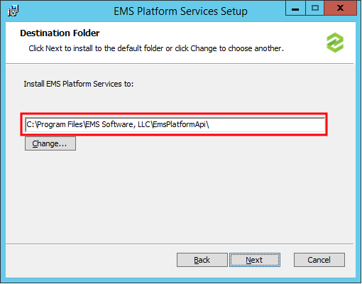
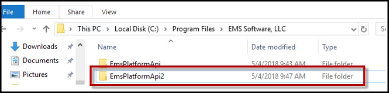
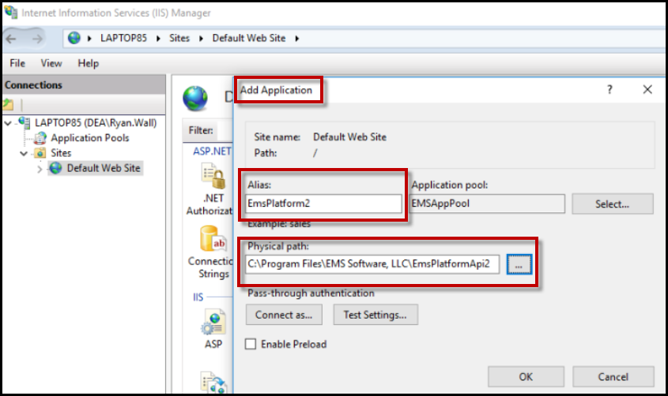
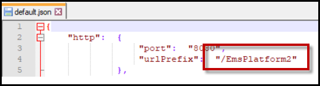
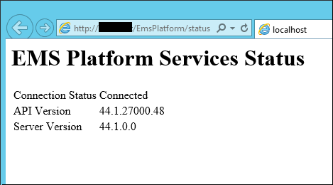
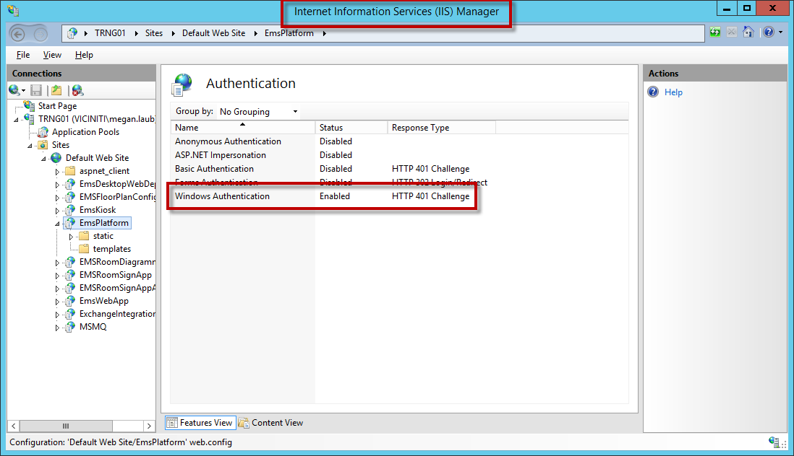
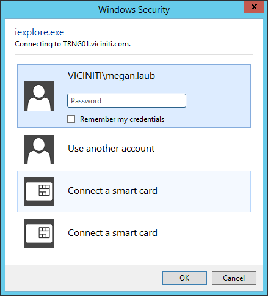

Install EMS Platform Services
This topic provides information on the following:
Install Platform Services
IMPORTANT: Verify the System Requirements and install the Prerequisites prior to installing EMS Platform Services.
- Download EMSPlatformServices.msi. (Required for all installations.)
- The EMS Platform Services Setup Wizard will appear. Click Next to begin installation.
EMS Platform Services Setup Wizard

- Choose a default folder for installing EMS Platform Services. The Platform installer by default will try to install in the Programs folder. You can change the path to wwwroot folder. The typical install path is C:\Program Files\EMS Software, LLC\EmsPlatformApi\. Click Next.
- You will need to enter the SQL server and EMS database, configured to allow external connections. Make a note of the database name.
- Select the Use Windows Authentication for Database Connection checkbox to user an Active Directory account instead of the EMS User for database authentication.
Tip: If you are unsure of the SQL server and EMS database name, you may be able to find the SQL server and EMS database name in the EMS Web App (Admin Functions > Connection String values under the version number heading) or EMS Desktop Client (File > Change Database > Provide Server Parameters dialog). You can also contact your company's IT group to locate the information.
- Enter a Virtual Directory Name.
- To enable NTLM authentication for Everyday User Authentication for the Platform Services Admin Portal and Integration Clients, click the Enable NTLM For EMS Everyday User Authentication box.
Important: To use NTLM authentication when logging into the EMS Platform Services Admin Portal, you must select the Enable NTLM For EMS Everyday User Authentication box. If you complete the installation process without selecting the Enable NTLM For EMS Everyday User Authentication box and you want to use NTLM authentication, you will need to re-install the EMS Platform Services software and select the checkbox during install.
- Click the Install button to complete the installation. You will receive a prompt from the Wizard that installation is complete. EMS Platform Services is now installed on your Web server.
- Click Finish.
- If you enabled NTLM authentication through the Enable NTLM For EMS Everyday User Authentication box during installation, verify the NTLM authentication.
Install a Multiple Instance of EMS Platform Services in the IIS
- After installing EMS Platform Services, copy the installed directory for each additional instance of EMS Platform Services.
Copy of Installed Directory of EMS Platform Services

- From your Internet Information Services (IIS) Manager, right click and select Add Application. In the Add Application dialog box, choose a unique name in the Alias field. In the Physical Path field, include the path of the copied folder above.
Adding a Multiple Instance of EMS Platform Services in IIS

- Click OK.
- Navigate to your default.json file (or web.config override file). Edit the urlPrefix setting to match the unique name of the instance in the IIS.
Editing the urlPrefix in the default.json File of the Multiple Instance

- Reset the IIS.
Verify Installation Status
- Access your URL for Platform Services (e.g., https://yourcompany.com/EMSPlatform).
- Verify the status of your installation by navigating to https://yourcompany.com/EMSPlatform/status.
Status Screen for EMS Platform Services

Verifying NTLM Authentication
Important: To use NTLM authentication when logging into the EMS Platform Services Admin Portal, you need to have selected the Enable NTLM For EMS Everyday User Authentication checkbox during the installation process. If you completed the installation process without selecting the Enable NTLM For EMS Everyday User Authentication box and you want to use NTLM authentication, you will need to re-install the EMS Platform Services software and select the checkbox during install.
- Verify that Windows Authentication is enabled from your Internet Information Services (IIS) Manager.
Windows Authentication Enabled in IIS Manager

- Navigate to the EMS Platform Services Admin Portal (e.g., https://yourcompany.com/EMSPlatform/admin).
- Verify that the Windows Security dialog box appears.
Verifying Windows Security Screen When Logging into the Admin Portal

- Enter the Everyday User's username and password.
Upgrade EMS Platform Services software
To upgrade EMS Platform Services to the current version of the software, you will need to do the following:
- Uninstall the EMS Platform Services software through Windows Control Panel > Programs > Uninstall a Program.
- Obtain the current release of EMS Platform Services from the EMS Customer Portal.
Tip: For more information on obtaining the latest version of the EMS Platform Services software and on enhancements and fixes to the software, see also: Updating to the Latest Version of EMS (Patches and Builds) and Release Notes.
- Re-install the EMS Platform services by completing the steps in the Install Platform Services section.
Note: If multiple instances of the EMS Platform Services software exist in IIS, you will need to delete the instances from the Windows directory and from IIS, and then install the multiple instances again once you have finished upgrading the EMS Platform Services software. See Also: Install a Multiple Instance of EMS Platform Services in the IIS.